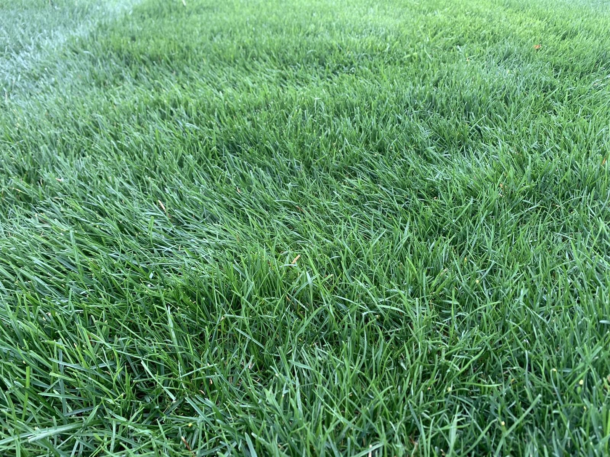
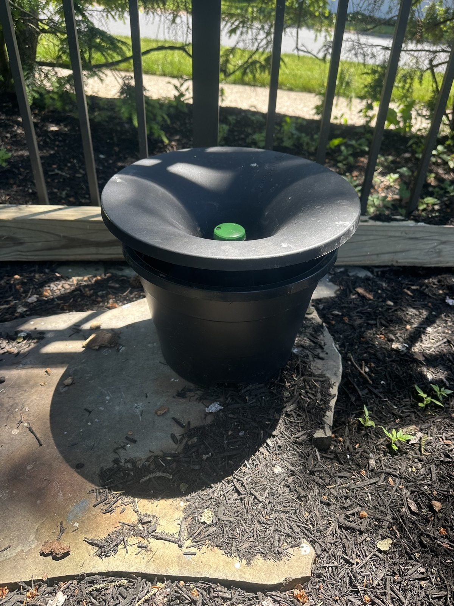
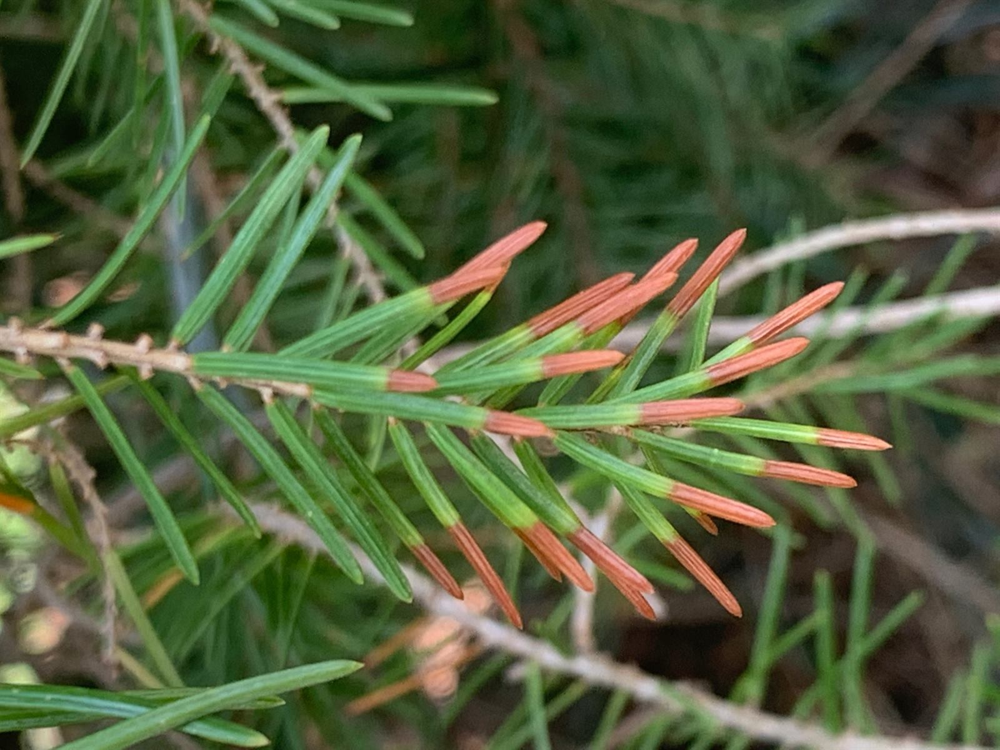
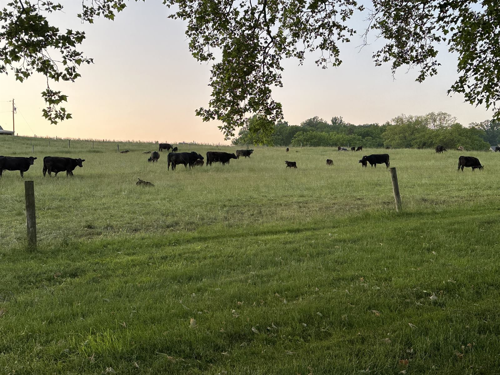
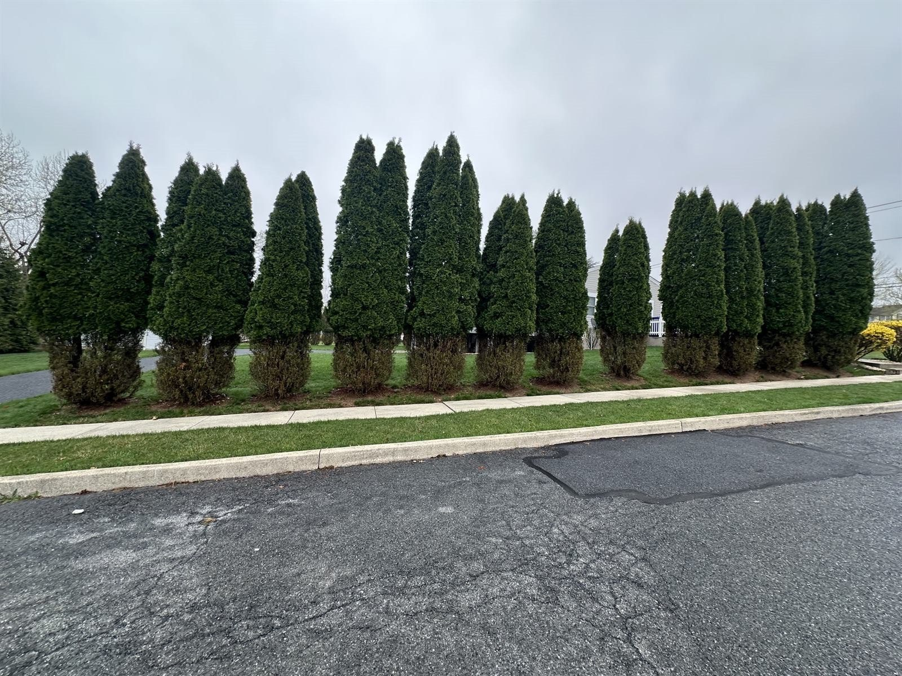
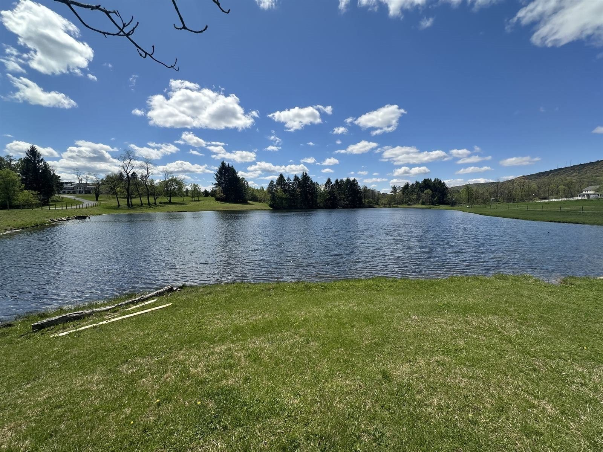

Lawns Plants & Pests LLC is a locally owned, owner-operated, full-service property care company. Licensed Pennsylvania pesticide applicator & certified NWCO. One call solves it all — lawn, pest, plant, mosquito, wildlife, bees, agricultural & aquatic.
Call or Text 717-379-3248 — Free EstimateWe're not a national chain. We're not a call center. The same person who answers your phone walks your property and does the work — real diagnostic decisions, real local expertise, no high-pressure sales scripts.
Continuously licensed as a Pennsylvania pesticide applicator since 2005 — over two decades diagnosing properties across Central PA. Not a new franchise. Not a corporate trainee on rotation. You get the same licensed applicator on your property every visit.
Active stinging insect nests, wildlife in living spaces, swarms during bee season — we prioritize emergencies for same-day or next-day response when at all possible. Routine work books a few days out, but urgent calls come first.
Licensed for lawn, pest, plant, mosquito, wildlife, bees, agricultural, and aquatic — all under one license, one phone number, one person who knows your property.



Fertilization, weed control, crabgrass pre-emergent, core aeration, overseeding, soil testing, and lawn renovation. Traditional and fully organic programs.
Learn more →
Perimeter-based pest control — ants, spiders, yellow jackets, hornets, wasps, fly remediation, and seasonal prevention. No indoor spraying.
Learn more →
Yard barrier treatments, In2Care stations, EcoGuard Plus fully organic applications, and seasonal programs.
Learn more →
Insect and disease control for ornamental trees and shrubs, systemic treatments, root zone fertilization, spotted lanternfly management.
Learn more →
Live honey bee removal and relocation in coordination with The Alleman Apiary. Bees relocated to working hives wherever the colony can be reached safely.
Learn more →
PA-licensed NWCO services for raccoons, groundhogs, squirrels, skunks, opossums, bats, and snakes. Trapping, removal, exclusion.
Learn more →
Pollinator-friendly lawn programs, pesticide audits, native plant guidance, and bee-safe mosquito control. The only Central PA pest control company that also runs a working apiary.
Learn more →
Fly control for cattle, poultry mite and louse treatments, sheep and goat parasite control, and varroa mite management for honey bees.
Learn more →
Repellent applications for arborvitae, hostas, yews, and ornamental shrubs. Seasonal prevention programs that protect plants through winter browse season.
Learn more →
Pond weed control, algae management, and mosquito larvae treatments. Licensed aquatic applicator with PA DEP permitting handled.
Learn more →We serve Dauphin, Cumberland, Lebanon, Perry, York, and Lancaster Counties — including:
Harrisburg, Paxtang, Penbrook, Steelton, Highspire, Middletown, Hummelstown, Hershey, Palmyra, Annville, Cleona, Lebanon, Grantville, Linglestown, Colonial Park, Susquehanna Township, Lower Paxton, Camp Hill, Mechanicsburg, Lemoyne, New Cumberland, Wormleysburg, Enola, Marysville, Halifax, Millersburg, Elizabethtown, Mount Joy, Mount Wolf, Manchester, Dillsburg, Carlisle, Boiling Springs, and surrounding Central PA communities.
"Called Devon and he came to set up the trap for the animal the next day. The animal was caught in less than 24 hrs. He is reliable and great!"
"I had a yellow jacket ground nest in my yard. With 2 active dogs, it was a time sensitive matter. I texted and within minutes he set an appointment for the next day. Texted ahead of arrival and was finished with the job in 10-15 minutes. All the work is guaranteed and if they come back he assured me he'd come back and take care of it. Great customer service. Will use again!"
"This team is absolutely incredible for our lawn care needs. Courteous and professional and they communicated incredibly well. The lawn always looks amazing and even showed resilience through this hot summer. I'd recommend this team to anyone in need of any service they provide!"
"Came out to look at yellow jackets in our soffit and talk through options for mosquitoes, black flies, and carpenter ants. Devon was refreshingly honest about what was worth paying for and what I could handle myself. No upsell, just clear guidance. I really appreciated the transparency and will use them again."
"Answered my call immediately and set a date for the next day to remove a hornet nest from a tree limb hanging over my driveway. He was prompt and took the nest from my property. Would highly recommend his services to others."
Reviews from verified customers on Google.
Call or text 717-379-3248 or email Lawnsplantspests@gmail.com. Locally owned. Licensed and insured. Serving Harrisburg, Hershey, Camp Hill, Mechanicsburg, and all of Central PA.
Call or Text 717-379-3248